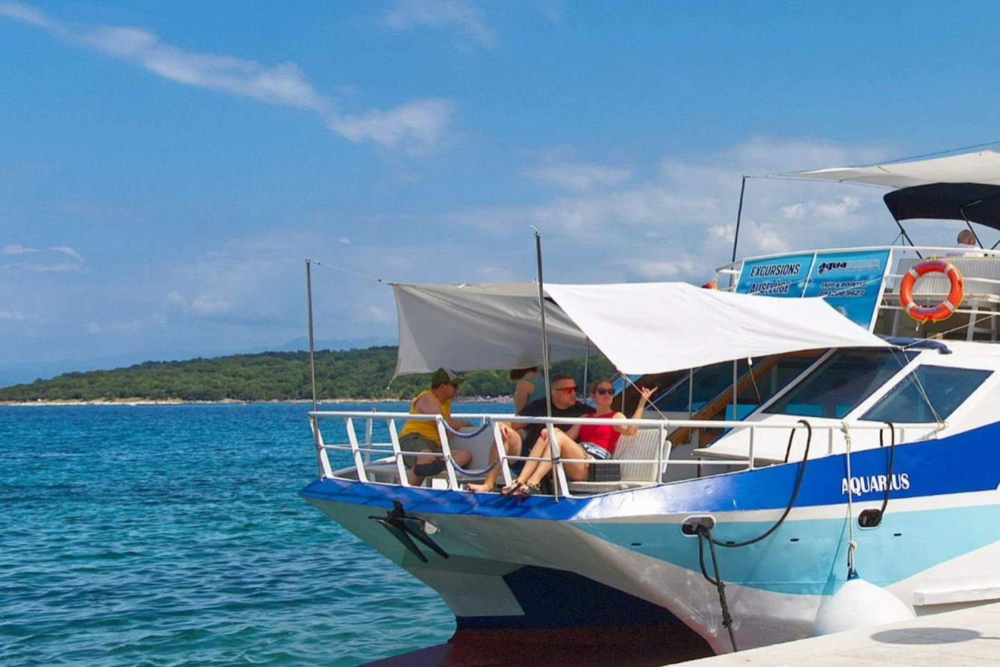
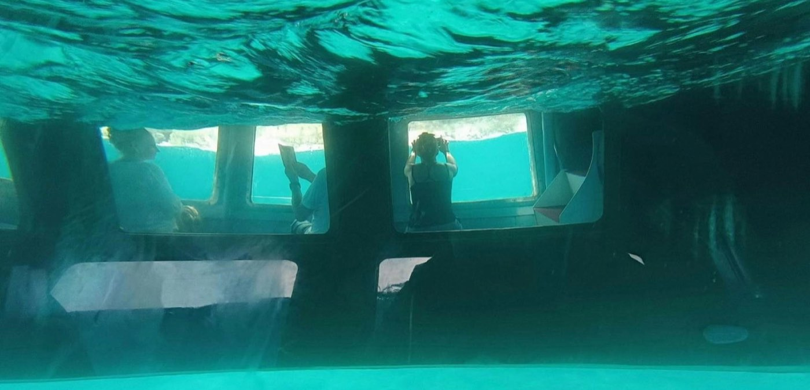

Izlet 01 · svaki dan
Panorama zapadne obale Krka
Jedinstvena prilika da istražite podmorje i mnoštvo vrsta riba uz zapadnu obalu Krka. Uživajte u moru i prirodi, hladnom piću iz našeg bara i opuštenoj ljetnoj glazbi. Uz trajanje od dva sata, izlet je savršen za obitelji s djecom.
| Trajanje | 2 sata |
|---|---|
| Polasci | Svaki dan, četiri polaska između 10:30 i 11:45 (Malinska i Njivice) |
| Sezona 2027. | 1. lipnja – 20. rujna |
| Cijena | od 25 € odrasli · od 12,50 € djeca |
| Jezici | hrvatski, engleski, njemački |
Ruta
- MalinskaUkrcaj ispred katamarana u marini Malinska
- Rt ČufStanka: otkrijte floru i faunu mora kroz stakleno dno
- NjiviceUkrcaj i iskrcaj putnika
- Porat · VantačićiPogled na obalu s broda
- PovratakIskrcaj u Malinskoj i Njivicama
Invalidska kolicaDječja kolicaMala djeca i starije osobeTrudniceBez kućnih ljubimaca